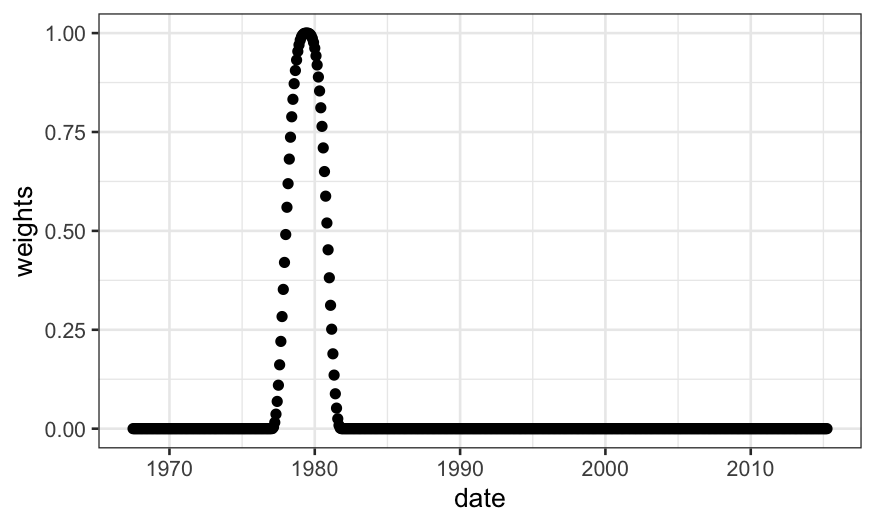
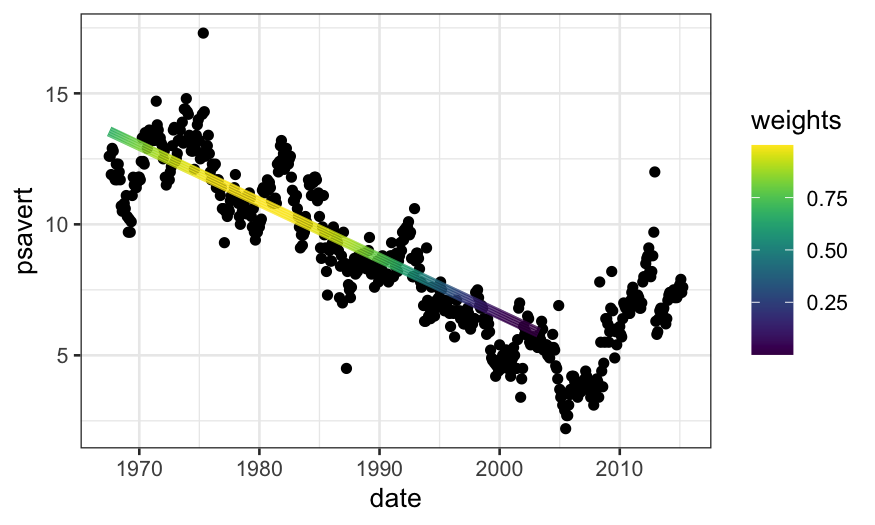
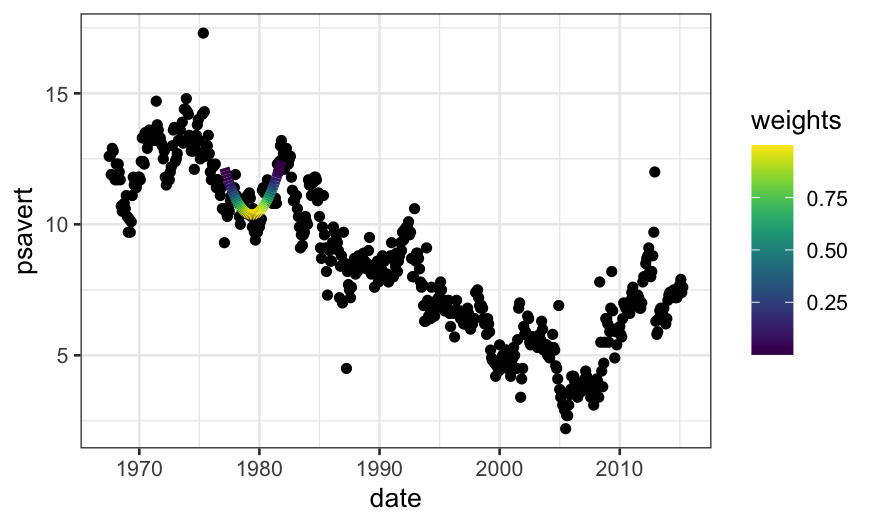
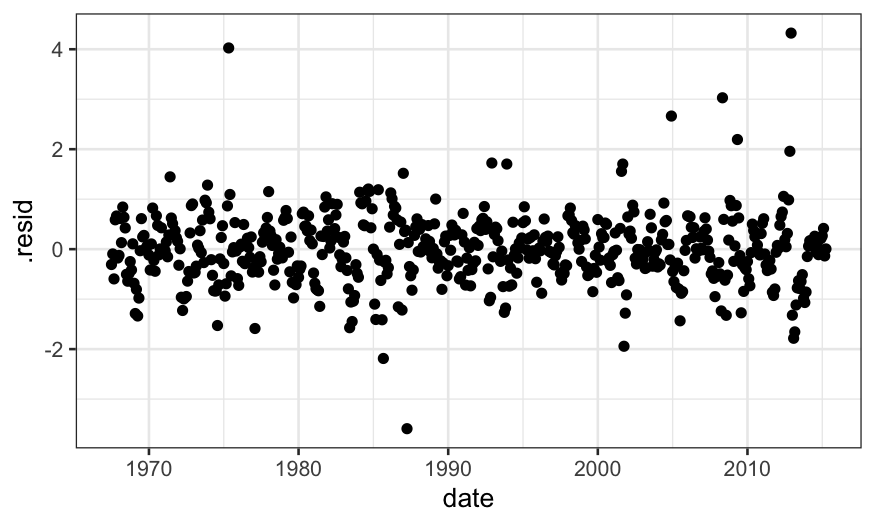
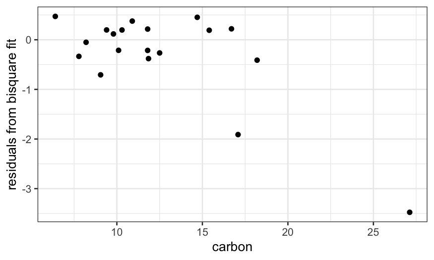

Stat 470/670 Lecture 9: Smoothing bivariate data
Julia Fukuyama
September 18, 2018
LOESS
LOESS, or local regression, builds on standard regression. The setup is:
We have bivariate data, so pairs \((y_i, x_i)\), \(i = 1,\ldots, n\).
We want to estimate the mean \(E(Y \mid X)\). We think this is a smooth function of \(X\), but we don't know what the form of that function is.
The idea is that since the mean function is smooth, it can be approximated with a linear or low-order polynomial function in small regions.
LOESS weights
The way we transform this intuition into a concrete procedure is to use weighted least squares.
LOESS has two parameters, \(\alpha\) (the span), and \(\lambda\), the degree of the local polynomial.
To find the value of the LOESS smoother at a point \(x_0\), we first define weights for all of the samples: \[
w_i(x_0) = T(\Delta_i(x_0) / \Delta_{(q)}(x_0))
\] where \(\Delta_i(x_0) = |x_i - x_0|\), \(\Delta_{(i)}(x_0)\) are the ordered values of \(\Delta_{i}(x_0)\), and \(q = \alpha n\), rounded to the nearest integer.
\(T\) is the tricube weight function (inverted by Tukey!): \[
T(u) = \begin{cases}
(1 - |u|^3)^3 & |u| \le 1 \\
0 & |u| > 1
\end{cases}
\]
Let's see what this looks like. We'll compute and plot weights, so first we need to define the tricube function:
tricube <- function(u) {
if(abs(u) > 1) {
return(0)
} else {
return((1 - abs(u)^3)^3)
}
}
Then we can define a function that computes the weights used by LOESS:
#' @param x0 The point
#' @param x A vector containing all of the weights
#' @param alpha The span argument in LOESS
loess_weights <- function(x0, x, alpha) {
## x is a vector, x0 is a single number, so deltas
## is a vector the same length as x with elements |x_i - x0|
deltas = abs(x - x0)
## this is a more parsimonious way of getting the
## delta_{(q)} value we defined on the previous slide
delta_q = quantile(deltas, probs = alpha)
weights = sapply(deltas / delta_q, tricube)
return(weights)
}
Let's compute the weights on the economics data. We'll first see what it looks like for the default value of \(\alpha\), \(\alpha = .75\):
library(tidyverse)
library(ggplot2)
library(broom)
library(viridis)
economics = mutate(economics, date_numeric = as.numeric(date))
summary(economics$date_numeric)
## let's calculate the weights at date_numeric = 3446
weights = loess_weights(x0 = 3446, x = economics$date_numeric, alpha = .75)
economics$weights = weights
ggplot(economics) + geom_point(aes(x = date, y = weights))
What if we decrease \(\alpha\)?
weights = loess_weights(x0 = 3446, x = economics$date_numeric, alpha = .1)
economics$weights = weights
ggplot(economics) + geom_point(aes(x = date, y = weights))

Notice that we have approximately \(\alpha n\) non-zero weights, and these are going to be the only points that contribute to the LOESS fit.
sum(weights != 0)
## [1] 58
## weights was computed wih alpha = .1, so we have approximately n * .1 non-zero weights
length(weights) * .1
## [1] 57.4
LOESS fits
These weights are then used in a local regression.
If \(\lambda = 1\), we find \(\hat \beta_0\), \(\hat \beta_1\) to minimize the weighted least squares criterion, \[
\sum_{i=1}^n w_i (y_i - (\beta_0 + \beta_1 x_i))^2,
\]
and the fitted value for the LOESS smoother at \(x_0\) is \(\hat \beta_0 + \hat \beta_1 x_0\).
If \(\lambda = 2\), we use quadratic regression, e.g. find \(\hat \beta_0\), \(\hat \beta_1\), \(\hat \beta_2\) to minimize the weighted least squares criterion, \[
\sum_{i=1}^n w_i (y_i - (\beta_0 + \beta_1 x_i + \beta_2 x_i^2))^2,
\]
and the fitted value for the LOESS smoother at \(x_0\) is \(\hat \beta_0 + \hat \beta_1 x_0 + \hat \beta_2 x_0^2\).
The analogous procedure works for any integer value of \(\lambda\).
Let's use our weights function to do the LOESS fit manually. We'll go back to \(\alpha = .75\)
weights = loess_weights(x0 = 3446, x = economics$date_numeric, alpha = .75)
economics$weights = weights
econlm = lm(psavert ~ date_numeric,
weights = economics$weights, data = economics)
## normally we would use 'augment' in 'broom' to get the fitted values,
## but there's a bug there with zero weights
economics$loess.fits = econlm$fitted.values
ggplot(economics) +
## first we'll plot the raw data
geom_point(aes(x = date, y = psavert)) +
## then we'll plot the local linear regression +
geom_line(aes(x = date, y = loess.fits, color = weights),
size = 2, data = subset(economics, weights > 0)) +
scale_color_viridis()

weights = loess_weights(x0 = 3446, x = economics$date_numeric, alpha = .1)
economics$weights = weights
econlm = lm(psavert ~ date_numeric + I(date_numeric^2),
weights = economics$weights, data = economics)
## normally we would use 'augment' in 'broom' to get the fitted values,
## but there's a bug there with zero weights
economics$loess.fits = econlm$fitted.values
ggplot(economics) +
## first we'll plot the raw data
geom_point(aes(x = date, y = psavert)) +
## then we'll plot the local linear regression +
geom_line(aes(x = date, y = loess.fits, color = weights),
size = 2, data = subset(economics, weights > 0)) +
scale_color_viridis()

loess.smoother = loess(psavert ~ date_numeric, data = economics)
loess.rougher = loess(psavert ~ date_numeric, span = .1, degree = 2, data = economics)
ggplot(economics) +
geom_point(aes(x = date, y = psavert)) +
geom_line(aes(x = date, y = .fitted),
data = augment(loess.smoother, data = economics), size = 1, color = "red") +
geom_line(aes(x = date, y = .fitted),
data = augment(loess.rougher, data = economics), size = 1, color = "orange")
Note that we can also do this with stat_smooth in ggplot:
ggplot(economics, aes(x = date, y = psavert)) +
geom_point() +
stat_smooth(method = "loess", span = .1, method.args = list(degree = 2), se = FALSE) +
geom_smooth(method = "loess", span = .75, method.args = list(degree = 2), se = FALSE)
Checking LOESS fits
As before, it's useful to do residual plots to check LOESS fits. The residual plots can tell us if we need to to allow for a more flexible fit.
When we check the fit for the LOESS fit with \(\alpha = .75\), we see that there is a lot of structure in the residuals, suggesting a smaller value of \(\alpha\) is needed.
ggplot(augment(loess.smoother, data = economics)) +
geom_point(aes(x = date, y = .resid))
When we check the residuals for the model with \(\alpha = .1\), there is less structure (although some remains, and since this is time series data we really should be using time series specific models).
ggplot(augment(loess.rougher, data = economics)) +
geom_point(aes(x = date, y = .resid))

As a second example, let's look at the LOESS fit and residuals on the diamonds dataset.
First the fits:
diamonds = mutate(diamonds, logprice = log10(price))
loess.diamonds = loess(logprice ~ carat, subset = clarity == "VS1", data = diamonds)
ggplot(augment(loess.diamonds)) +
geom_point(aes(x = carat, y = logprice), alpha = .1) +
geom_line(aes(x = carat, y = .fitted), size = 1, color = "red")
Then the residuals:
ggplot(augment(loess.diamonds)) +
geom_point(aes(x = carat, y = logprice - .fitted), alpha = .1)
The fact that the residuals still show structure suggests that we should decrease the span.
We can try decreasing the span even more, but the fit still isn't flexible enough and some structure in the residuals remains:
loess.diamonds.rougher =
loess(logprice ~ carat, subset = clarity == "VS1",
data = diamonds, span = .2, degree = 2)
ggplot(augment(loess.diamonds.rougher)) +
geom_point(aes(x = carat, y = logprice), alpha = .1) +
geom_line(aes(x = carat, y = .fitted), size = 1, color = "red")
ggplot(augment(loess.diamonds.rougher)) +
geom_point(aes(x = carat, y = logprice - .fitted), alpha = .1)
Summing up
Once we understand that LOESS is a weighted regression, we have some guidance about how to choose the parameters.
\(\alpha\) and \(\lambda\) (span and degree) should be chosen so that the local regressions fit the data well.
Very wiggly functions will require larger \(\lambda\) and smaller \(\alpha\).
With smooth functions we can use smaller \(\lambda\) and larger \(\alpha\).
When will LOESS be helpful?
We expect the mean function, \(E(Y \mid X)\), to be smooth.
When we don't have that many data points, LOESS can help visualize the mean function. However, this requires you to believe in your smoother, and you might be skeptical.
When we have so many data points that it's hard to see the mean (diamonds dataset)
With an intermediate number of data points (like in the economics dataset) we do the smoothing by eye automatically and it doesn't seem as helpful, but it can still help if you have many sets of points that you want to compare.
Robust regression
The data set dating (in lattice.RData) contains paired observations giving the estimated ages of 19 coral samples in thousands of years using both carbon dating (the traditional method) and thorium dating (a modern and purportedly more accurate method.) What’s the difference between these two methods?
load("../../datasets/lattice.RData")
ggplot(dating, aes(x = carbon, y = thorium - carbon)) +
geom_point()
We notice a couple of things: thorium dating is always greater than carbon dating, and the increase gets bigger for larger values of carbon.
We could try to describe this relation with a linear fit.
Let's fit the model and plot the fitted values and the residuals:
dating = mutate(dating, diff = thorium - carbon)
dating.lm = lm(diff ~ carbon, data = dating)
ggplot(augment(dating.lm)) +
geom_point(aes(x = carbon, y = diff)) +
geom_line(aes(x = carbon, y = .fitted))
ggplot(augment(dating.lm, data = dating)) +
geom_point(aes(x = carbon, y = diff - .fitted)) +
ylab("residuals")
The problem is that the couple of outliers with high carbon values are dragging the line down.
It seems that there is a linear relationship in most of the data, with a couple of outliers that need to be explained separately.
We could solve this problem by excluding the outliers and fitting a linear model to the remainder, but there is another solution in robust regression.
library(MASS)
dating.rlm.huber = rlm(diff ~ carbon, data = dating, psi = psi.huber, maxit = 100)
dating.rlm.bisquare = rlm(diff ~ carbon, data = dating, psi = psi.bisquare)
ggplot(dating) +
## raw data
geom_point(aes(x = carbon, y = diff)) +
## rlm bisquare fit
geom_line(aes(x = carbon, y = dating.rlm.bisquare$fitted.values), color = 'red') +
## rlm huber fit
geom_line(aes(x = carbon, y = .fitted), color = 'orange', data = augment(dating.rlm.huber)) +
## lm fit
geom_line(aes(x = carbon, y = .fitted), data = augment(dating.lm), color = 'blue')
A residual plot shows us that the bisquare robust fit does a really good job at explaining most of the data and almost completely ignores the couple of points with high values of carbon.
ggplot(dating) +
geom_point(aes(x = carbon, y = dating.rlm.bisquare$resid)) +
ylab("residuals from bisquare fit")

Next time
How robust fits work
Comparing bivariate data